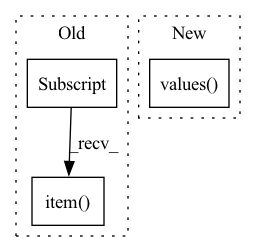

Pattern ID :20855
Before Change
if k.startswith("rec_metrics.") and k.endswith("_fused_states"):
for i in range(v.size(0)):
for j in range(v.size(1)):
tc.assertEqual(v[i][j].item() , 0)
def test_rank0_checkpointing(self) -> None:
// Call the tested methods to make code coverage visible to the testing systemAfter Change
// 2. Test unsync()
metric_module.unsync()
state_dict = metric_module.state_dict()
for v in state_dict.values() :
tc.assertEqual(v.item(), value)
// 3. Test reset()In pattern: SUPERPATTERN
Frequency: 3
Non-data size: 3
Instances Fragment ID: 67232672
Project Name: facebookresearch/torchrec
Commit Name: b6090b08096e6ec2dfeb75ca209aad89a009886c
Time: 2023-01-24
Author: yinbin@meta.com
File Name: torchrec/metrics/tests/test_metric_module.py
M Class Name: MetricModuleTest
N Class Name: MetricModuleTest
M Method Name: _run_trainer_checkpointing(0)
N Method Name: _run_trainer_checkpointing(0)
M Parent Class: unittest.TestCase
N Parent Class: unittest.TestCase
M File Name: torchrec/metrics/tests/test_metric_module.py
N File Name: torchrec/metrics/tests/test_metric_module.py
M Start Line: 198
M End Line: 242
N Start Line: 198
N End Line: 236
Before Change
)
loss_agg += loss_abs.item()
loss_bbox_agg += loss_dict["bbox"].item()
loss_giou_agg += loss_dict["giou"].item()
loss_cls_agg += loss_dict["cls"].item()
loss = loss_agg / len(self._val_loader)After Change
// Make prediction
losses, predictions = self._model.train_step(data, targets, evaluation=True)
loss_abs = sum(losses.values() )
loss_agg += loss_abs.item()
loss_bbox_agg += losses["reg"].item() Fragment ID: 67232669
Project Name: bwittmann/transoar
Commit Name: 00768630087f32a1ba35dda71dc4f1823d45499c
Time: 2022-01-20
Author: bastian.wittmann@tum.de
File Name: transoar/trainer.py
M Class Name: Trainer
N Class Name: Trainer
M Method Name: _validate(2)
N Method Name: _validate(2)
M Parent Class:
N Parent Class:
M File Name: transoar/trainer.py
N File Name: transoar/trainer.py
M Start Line: 98
M End Line: 138
N Start Line: 100
N End Line: 140
Before Change
)
)
wandb.log({"umap": umap})
loss = trainer.logged_metrics["loss"].item()
wandb.finish()
return lossAfter Change
callbacks: List[Callback] = []
if "callbacks" in config:
callbacks = [
hydra.utils.instantiate(cb_conf) for cb_conf in config.callbacks.values()
]
trainer = hydra.utils.instantiate(
config.trainer, logger=wandb_logger, callbacks=callbacks, _convert_="partial" Fragment ID: 67232671
Project Name: mics-lab/scyan
Commit Name: faf4d9a4ab7c96e62392e4803f47083c5637b3d4
Time: 2022-02-18
Author: quentin.blampey@student.ecp.fr
File Name: run.py
M Class Name: AnonimousClass
N Class Name: AnonimousClass
M Method Name: main(1)
N Method Name: main(1)
M Parent Class:
N Parent Class:
M File Name: run.py
N File Name: run.py
M Start Line: 27
M End Line: 72
N Start Line: 30
N End Line: 86